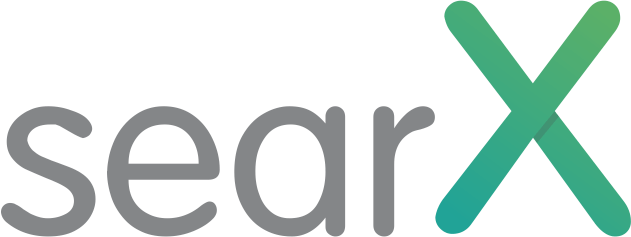

Free Software refers to free as in freedom and that's what i too believe in !!!. A free software always should guarantee its users the essential four freedoms. The absence of at least any one of these freedoms means an application is not free software. I love the way the Free Freedoms of Free Software is expressed as - 100 ( in binary 4 ) Freedoms of Free Software.
FREEDOM 0 : `001 - USE`
FREEDOM 1 : `010 - STUDY`
FREEDOM 2 : `011 - SHARE`
FREEDOM 3 : `100 - IMPROVE`
But i would strongly suggest going through the official page from FSF - Four Freedoms of Free Software. Everyone or most of them know what are the Four Freedoms of Free Software, but when always the big question is "How do we Implement it?". So this blog would be essentially try to justify the same.
Plan of Action
- Download searx's source code
- Try running searx in our local server i.e. localhost
- Lets make few changes in the source code & host it
- Redistribute it under FOSS license
searx is a meta search engine which is a Free and Open Source Software under AGPL license which gives us the FREEDOM to Use the Source Code, Study the Source Code, Share the Source Code and Improve & Distribute the Source Code but in Free Software licence alone. And searx is written in python, which can be run in localhost. So we will be utuising this instance for example. But this can be even said as aawareness building for searx as a search engine :slight_smile:
Prerequisite:
We need these tools to be installed.- GNU\Linux based machine ( I'm working on debian based )
- Python3
- PIP
1. Download the source code from the official repo & possibly we can use two methods
Install Git and Clone the repo
sudo apt install git git clone git@github.com:asciimoo/searx.gitDownload from the official repo in zip format and extract it.
Click on
Download ZIP, save it in local machine Extract the searx-master zip file to
We are able to download and study the source code of searx is open and public can access it. We can even go a step ahead and host it on our server too.
2. Run searx in localhost
Open Terminal
ctrl+Alt+t- This command opens the terminalInstall Python
sudo add-apt-repository ppa:jonathonf/python-3.6 sudo apt-get update && sudo apt-get install python3.6
Install PIP
sudo apt install python3-pip sudo apt install build-essential python3-devInstall & Upgrade tools from requirement list
cd searx sudo ./manage.sh update_packagesRun searx
python searx/webapp.py
- Output
z@zphoenix-pc:~/searx$ python searx/webapp.py WARNING:searx.webapp: * Deprecation Warning * WARNING:searx.webapp: Python2 is deprecated
- Serving Flask app "webapp" (lazy loading)
- Environment: production WARNING: This is a development server. Do not use it in a production deployment. Use a production WSGI server instead.
- Debug mode: off INFO:werkzeug: * Running on http://127.0.0.1:8888/ (Press CTRL+C to quit)
So in our Local Machine i.e. Localhost or 127.0.0.1 in the port vale 8888 searx would be running
Use localhost:8888 or 127.0.0.1:8888
Hurray Successfull !!!!!
Note : ctrl + c will abort the hosting in localhost
3. Lets do some changes to the Source Code & host it again
For simplicity case let's try two task or modificationLets change the homepage Logo of Searx in Oscar Theme
Lets edit the footer in Oscar Theme
To talk about the searx source code, it have 6 different theme, amongst it we shall work on Oscar Theme. So for UI of searx they have used the concept of template and static inside which you will find different themes. So firstly let's try to change homepage logo
instead of

In index.html change the name of the image accordingly to get the difference.
And in the same footer in base.html file to the below content
Hosted by GLUG PESCE, Mandya - searx - a privacy-respecting, hackable metasearch engine glugpesce.github.io
Run searx
cd searx python searx/webapp.py
We were not just able to study the source code but modify it. A little step ahead is to re-distribute the modified version. In this case we have just customised the look and are re-distributing the source code.
4. Redistribute it under FOSS license
Now we have modified searx source code, so let's publish it under GPL v3 license and upload the source code to Gitlab and also host in the same platform as it provides as gitlab pages.Note : Make sure you complete git configuration earlier.
git clone git@gitlab.com:glugpesce.searx/glugpesce.searx.gitlab.io.git
cd glugpesce.searx.gitlab.io.git
git status
git add
git commit -m "Initial upload - searx"
git push
Now the source code is updated to gitlab repo, next step lets add license to the repo. Since we are following FOSS and four freedom of free software, we shall redistribute it under free license alone !!!
Conclusion
Searx is just one such example taken here, but out there we have hell lot of free softwares to which we can contribute by adding a feature or checking for bug and correct if possible or just contribute in documentation there are many options open. The four freedoms of free software allows and guarantee the user the freedom to use as we wish, as we downloaded and read the source code. Planned to host it on our server. Next it allows the user to study and use it according to our will and wish. So we got an opportunity to customise searx as we wished !!!. So few may like our customisation so why not redistribute it for others? That's possible in free software. And finally others could see us on our repo help us, and help the community. We went to an extent of hosting it which gives an chance for others to even try our customisation.
So free softwares are must !!! Only when we as a community get it grow, we all grow along with the community. Always remember let's not get DENIED for any reason. Always remember contribution is key to growth.
Tags
* Free software * Four Freedoms * Implementation * Git * Gitlab * Account * Commands * searx * FOSS * GLUG-PESCE * Mandya